Collective Implementations
Motivation: Implementing AllReduce
Now that we have definitions of the 7 collectives, we can start thinking about how to implement them in a network. To implement a collective, there are two questions we need to answer: What topology do we use to connect the nodes? What data has to be exchanged between the nodes in order to efficiently complete the operation?
Once we’ve decided on what topology to use and what data to exchange, we can then analyze the performance of our design. What was the total amount of network bandwidth we used? How long did it take for the operation to complete? Other performance metrics can also be focused, but we’ll focus on these two for these notes.
To measure performance, we’ll define some variables. There are \(p\) nodes in total. Each vector is \(D\) bytes in total. This means that each vector element (i.e. each box in the diagram) is \(D/p\) bytes.
In this section, we’ll set \(p=5\) to make some of the demos more illustrative. Note that this also means that each vector is now 5 elements instead of 4 elements. (Side note: Remember that the vector represents arbitrary data, and we divide each vector into \(p\) equally-sized sub-vectors, where \(p\) is the total number of nodes. Increasing \(p\) from 4 to 5 doesn’t necessarily mean we have more data. It could just mean we split the same data into 5 chunks instead of 4 chunks.)
In this section, we’ll focus on implementing the AllReduce collective, although the ideas can be applied to the other collectives as well. Recall that AllReduce computes an element-wise sum of the vectors, and then sends the sum vector to all nodes.

Approach 1: Full Mesh
The first topology we’ll consider is a full-mesh, where every node has a direct link to every other node.
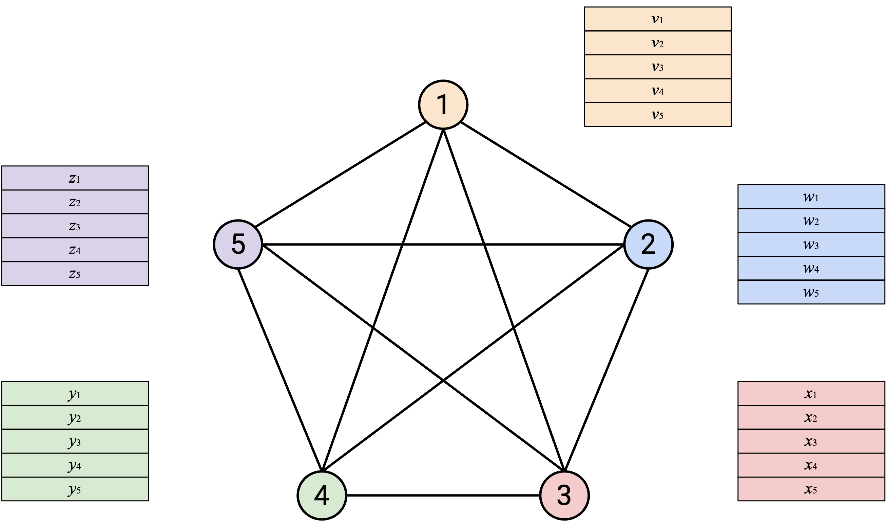
With this topology, we can implement AllReduce with these steps: First, everyone sends their entire vector directly to every other node.
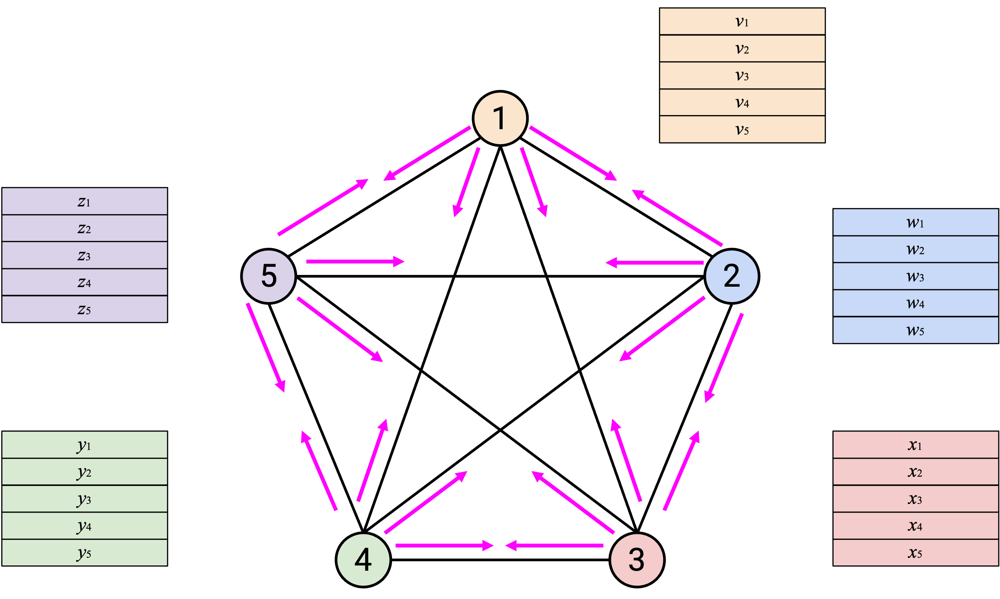
Then, each node sums all the vectors it receives.
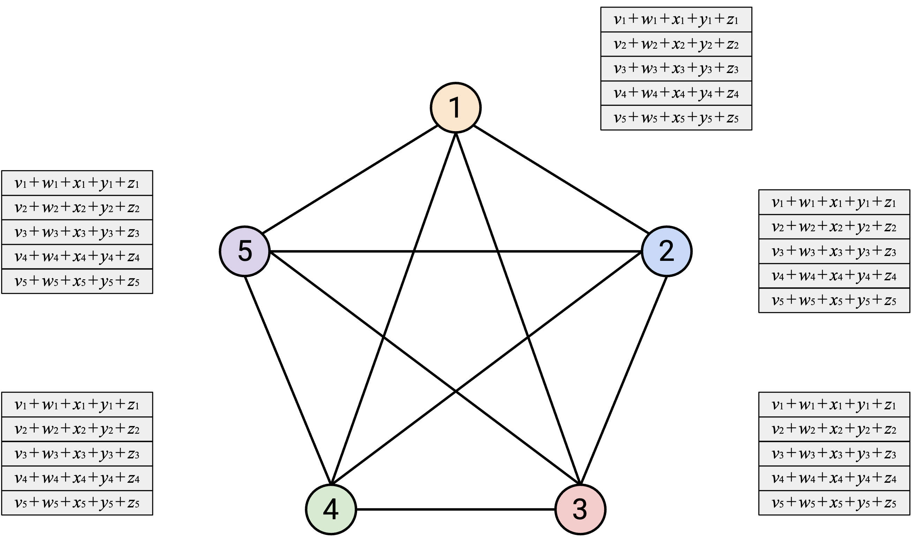
How much bandwidth does this approach use? Each node needs to send its entire vector (\(D\) bytes) to all \(p-1\) other nodes, so each node sends \(D(p-1)\) bytes. There are \(p\) nodes in total, so the total data sent is \(Dp(p-1) = O(D \cdot p^2)\) bytes.
How much time does this approach take? It depends on the exact resource limits of the nodes and the links, but assuming no resource limits, all of the vector sending can happen at the same time, completing in a single time step. In other words, Node 1 sends data to all other nodes, using all 3 of its outgoing links simultaneously. At the same time, Node 2 can also send data to all other nodes, using all 3 of its outgoing links simultaneously. Assuming no resource limits, this approach takes a single time step to complete, where each node needs to send and receive \(2 \cdot D \cdot (p-1)\) bytes per time step. (Each node sends \(D \cdot (p-1)\) bytes and receives \(D \cdot (p-1)\) bytes, and summing those up gives us the extra factor of 2.)
Approach 2: Reduce at One Node
In the next topology, let’s have a single topology do all the computation work:
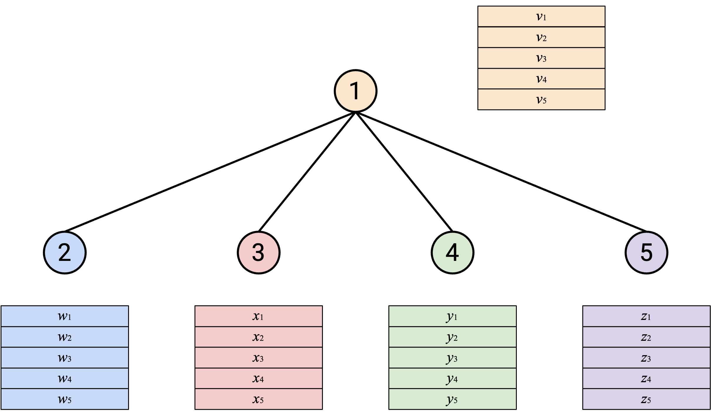
To run AllReduce: First, everybody (except Node 1) sends their vector to Node 1.
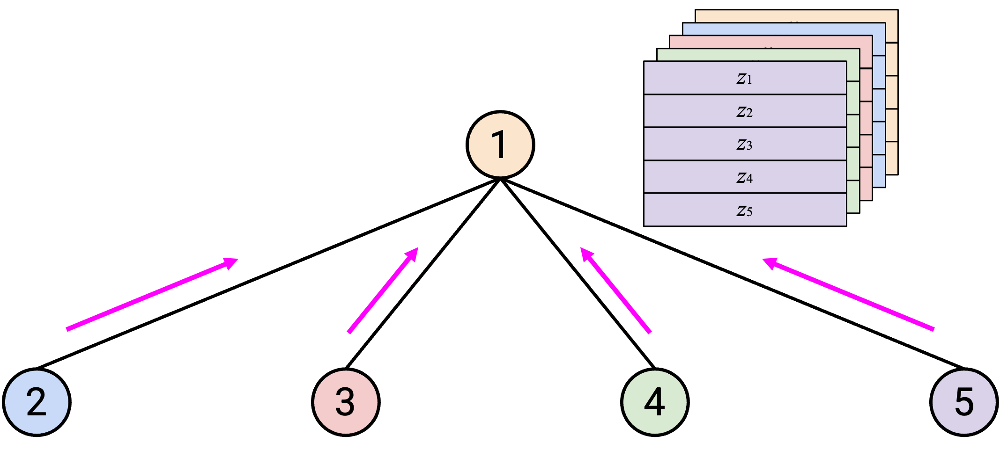
Then, Node 1 computes the sum, and sends the sum back to everybody.
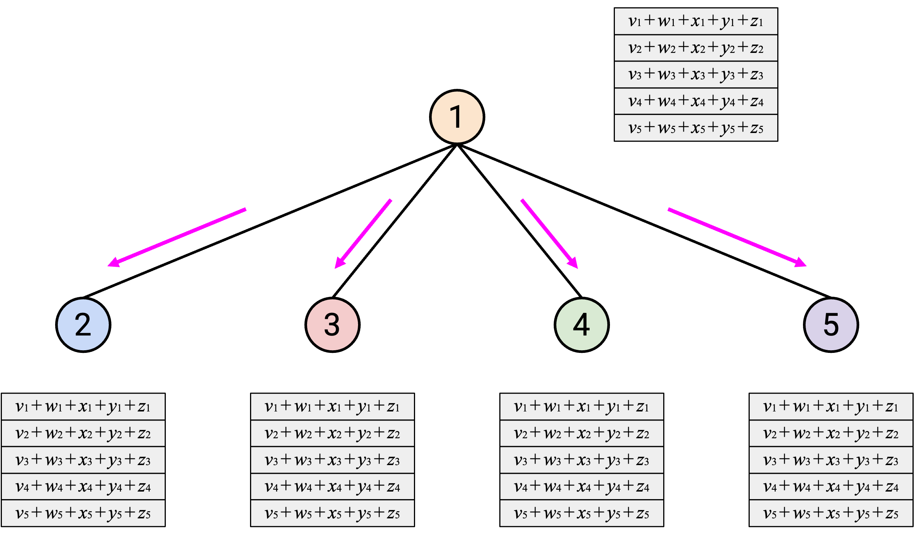
How much bandwidth does this approach use? Each node (except Node 1) needs to send its entire vector to Node 1, which means \(D\) bytes are sent. There are \(p-1\) nodes that need to send data, so the total data sent in the first step is \(D(p-1)\) bytes.
Then, in the second step, Node 1 has to send the sum vector to everybody else. The sum vector is \(D\) bytes, and it has to be sent to \(p-1\) other nodes, so the total data sent in the second step is also \(D(p-1)\) bytes.
In total, across the two steps, we sent \(2 \cdot D \cdot (p-1) = O(D \cdot p)\) bytes. Notice that this is a factor of \(p\) better than the \(O(D \cdot p^2)\) bytes sent in the full-mesh approach.
How much time does this approach take? Again, it depends on the exact resource limits, but assuming no resource limits, everyone can send their vector to Node 1 at the same time. Then, we have to wait for Node 1 to compute the sum. After the sum is computed, Node 1 can send the sum back to everybody else at the same time. In total, this approach takes 2 time steps to complete, where Node 1 has to send or receive \(D \cdot (p-1)\) bytes per time step.
We aren’t precisely measuring how long a “time step” is here, but the main point of comparison here is that with this approach, all the sending in the first step has to finish before sending in the second step can start. By contrast, in the first approach, all of the data sending could happen at the same time.
One downside of this approach is that we have a single point of failure at Node 1. This approach is not commonly used in practice.
Approach 3: Tree-Based
In the next topology, we’ll build a binary tree. Remember that binary here means that each node has at most 2 children.
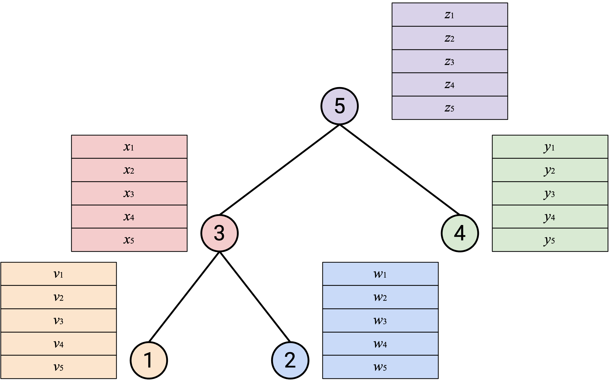
To run AllReduce: Starting from the leaf nodes at the bottom, each node sends its vector to its parent.
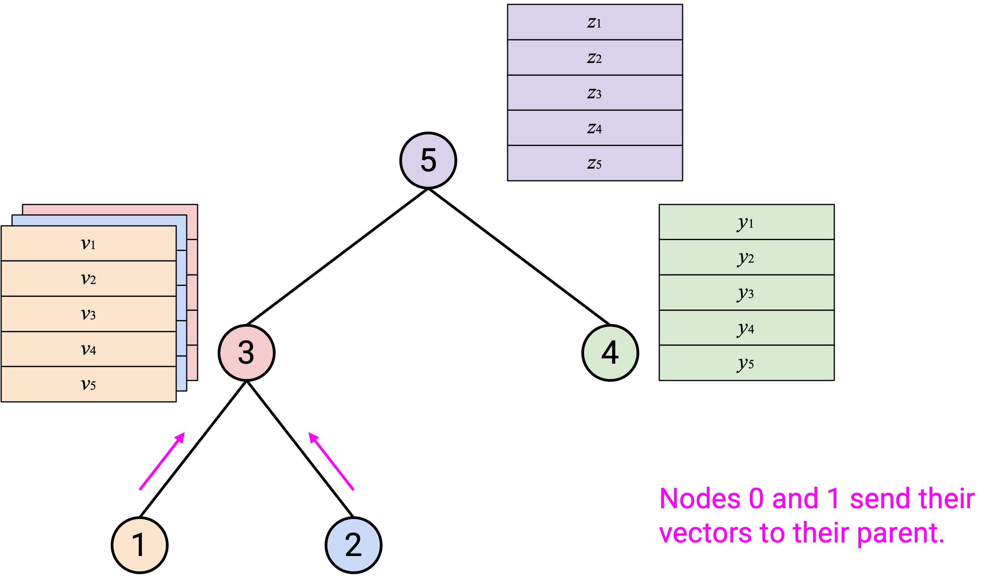
When you receive all of your children’s vectors, you should sum them with your vector.
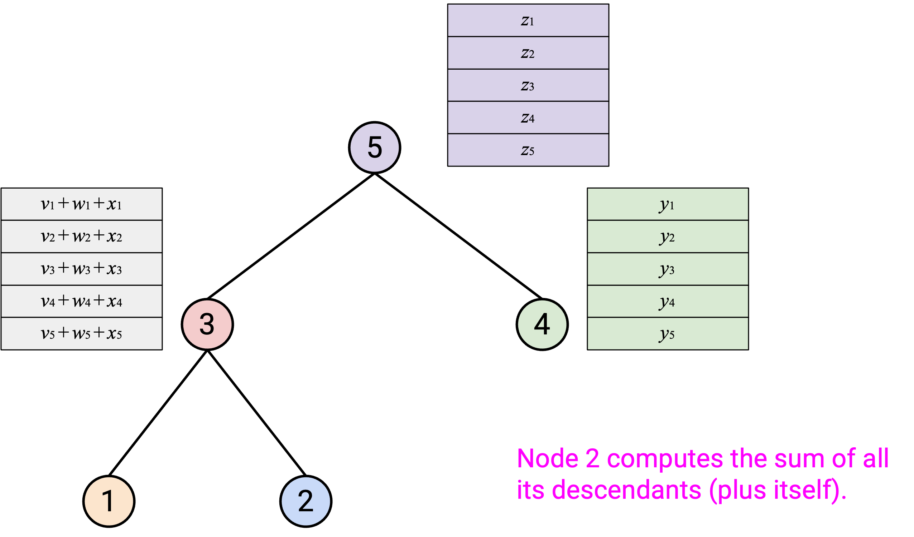
Then, you should send this resulting sum vector to your parent.
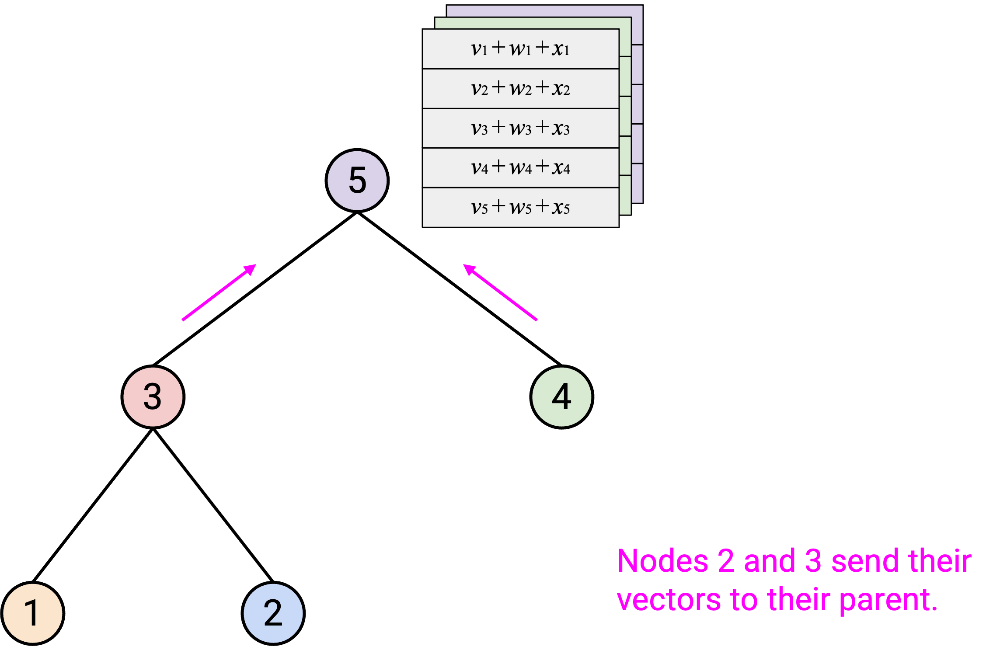
After repeating this step up all the layers of the tree, the root should have computed the overall sum.
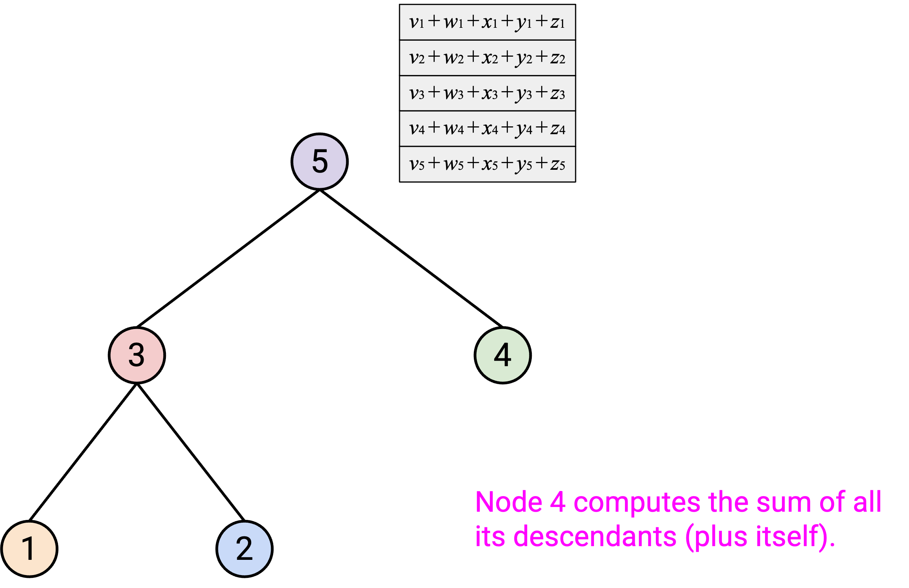
Then, in the second step, the root sends the overall sum vector down the tree, to its children. When you receive the sum vector from your parent, you should send a copy of that sum vector to all your children.
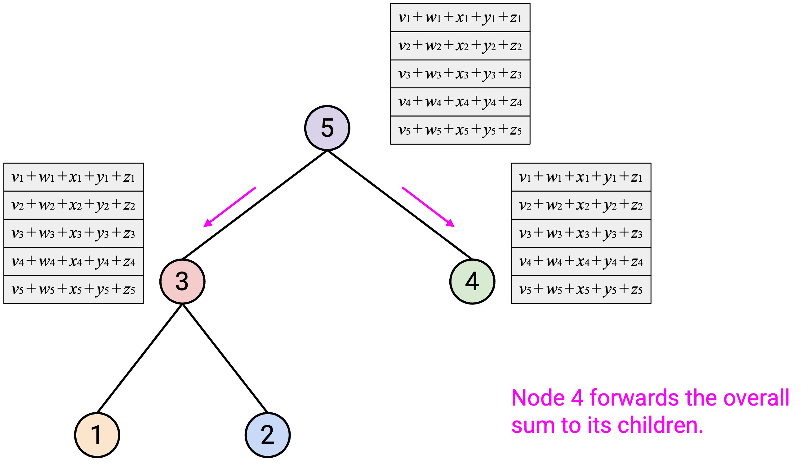
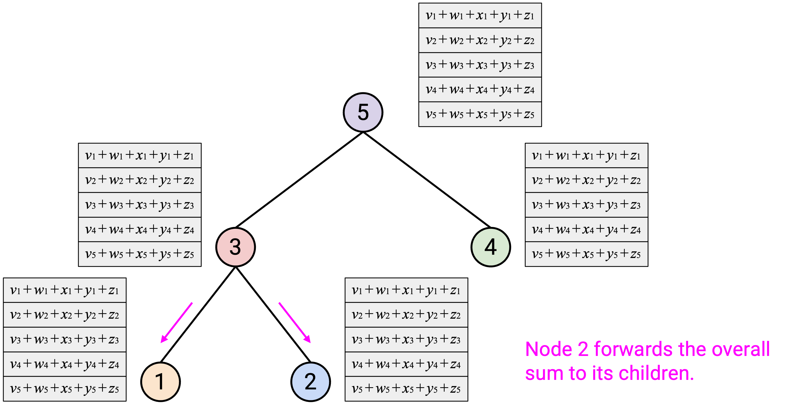
How much bandwidth does this approach use? In Step 1, each node receives up to 2 vectors from its children (recall: the tree is binary), and each node sends 1 vector to its parent. This gives us an upper-bound of \(3D\) bytes per node, for a total of \(3D \cdot p\) bytes in Step 1.
Then, in the second step, each each node receives 1 vector from its parent, and sends up to 2 vectors to its children. Again, we get an upper-bound of \(3D\) bytes per node, for a total of \(3D \cdot p\) bytes in Step 2.
In total, across the two steps, we sent \(6 \cdot D \cdot p = O(D \cdot p)\) bytes. This is a factor of \(p\) better than the full-mesh, and the same as the reduce-at-one-node approach.
How much time does this approach take? You have to wait to receive vectors from your children before you can send the sum (i.e. sum of your vector and your children’s vectors) to your parent. In total, this approach takes \(O(\log p)\) time steps to send vectors up the tree, and another \(O(\log p)\) time steps to send the overall sum down the tree, for a total of \(O(\log p)\) time steps. Each node has to send or receive \(3D\) bytes per time step (note that this is fewer bytes per time step than the other approaches). An exact time comparison would require plugging in values for \(D\) and the resource limits in the network, but roughly speaking, this approach requires more time steps, but each time step can probably complete faster since there’s less data to transmit per time step.
Notice that we took advantage of the reduction operation in this implementation. Each node sums up its vector and its children’s vectors, so that it only has to send up a single sum vector to its parent. In a more naive approach, each node would have sent up 3 vectors to its parent (its own vector, and both of its children’s vectors), but we took advantage of the reduction to save bandwidth.
More generally, the consolidation collectives (Reduce, ReduceScatter, AllReduce) give us an opportunity to optimize their implementation. In Reduce and ReduceScatter, the total amount of data received is actually less than the amount of data sent, and we can take advantage of that in our implementations. For example, if we know that the output is a sum of all vectors, and we receive two vectors, we can sum up the vectors and forward a single, summed vector, instead of forwarding the two vectors separately.
Approach 4: Ring-Based (Naive)
In the last two approaches, we’ll build a ring-shaped topology. Note that there’s nothing special about the wrap-around link from Node 1 to Node 5, compared to the other links (i.e. the link being longer doesn’t mean anything).
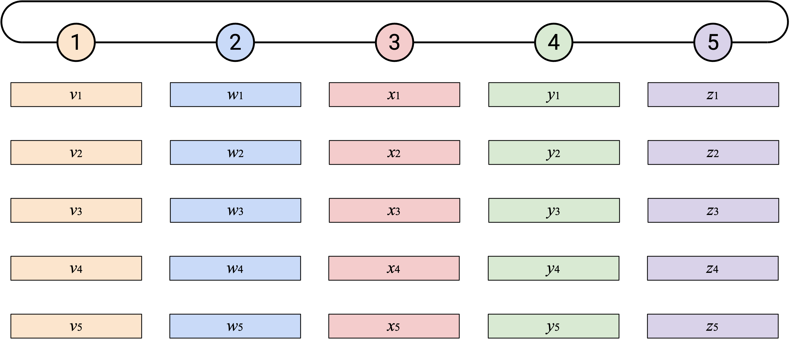
To run AllReduce naively: Node 5 starts by sending its vector left.
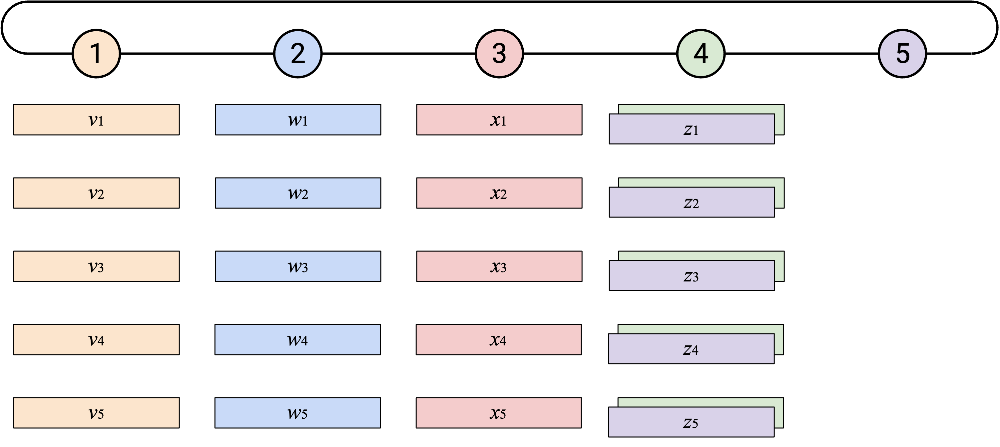
When you receive a vector from your neighbor to the right, you should sum it with your vector.
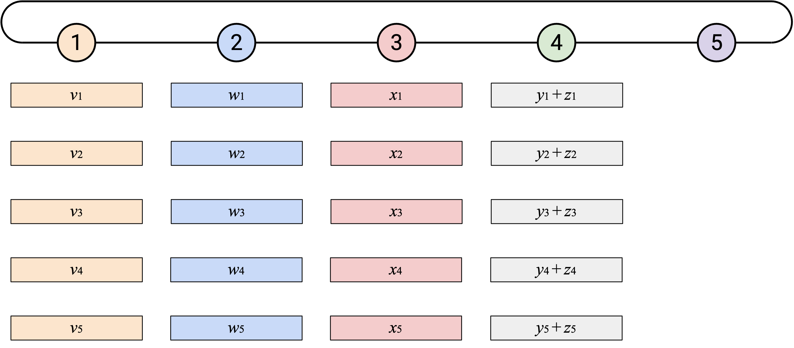
Then, you should send this resulting sum vector to your left neighbor.
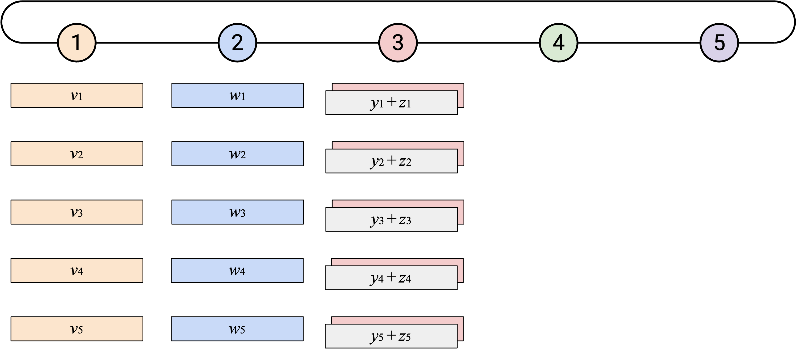
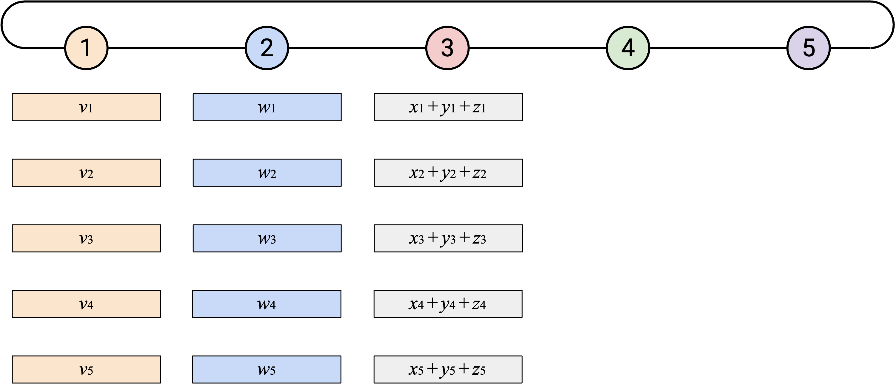
Eventually, this process will work around the loop.
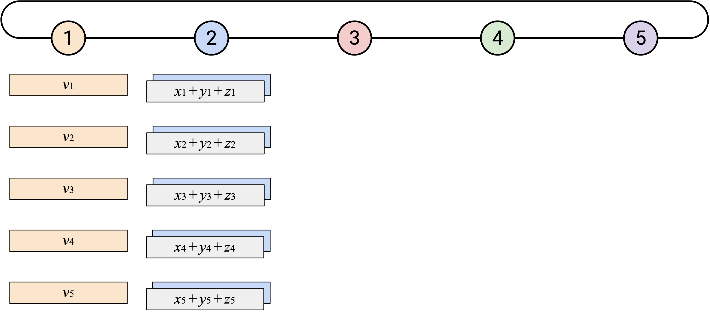
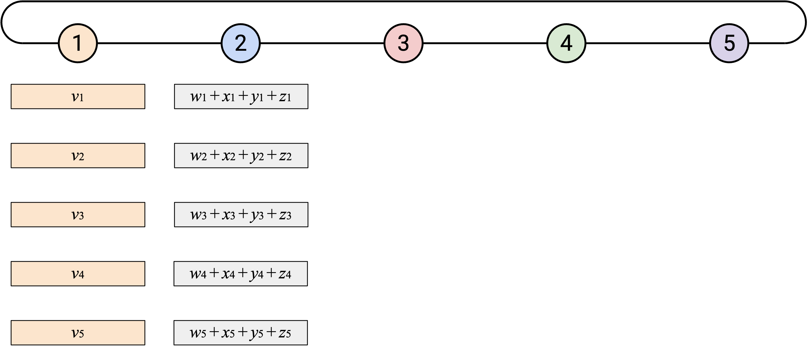
To finish up, Node 1 will compute the overall sum.
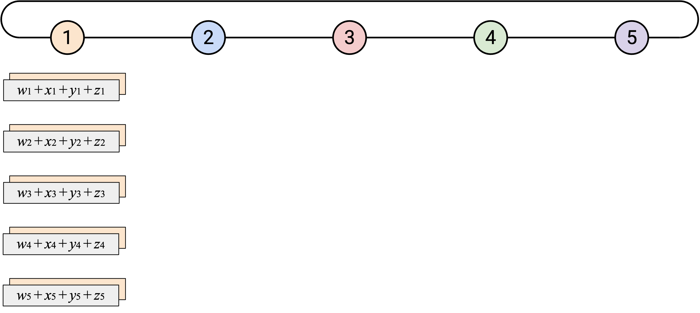
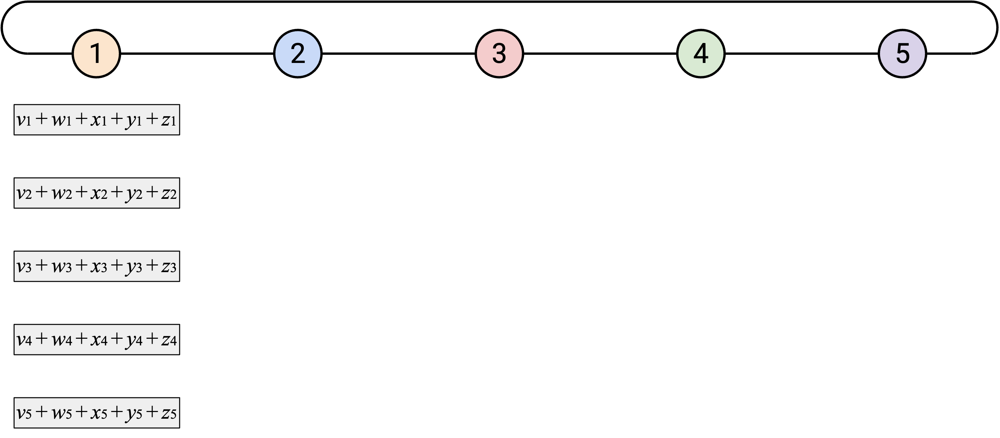
Then, in the second step, we will send the overall sum around the loop so that everyone has a copy. Node 5 starts by sending the overall sum left. When you receive the overall sum vector from your neighbor to the right, you should send a copy of the sum vector to your left neighbor. Eventually, this process works around the loop, and everyone receives a copy of the overall sum.
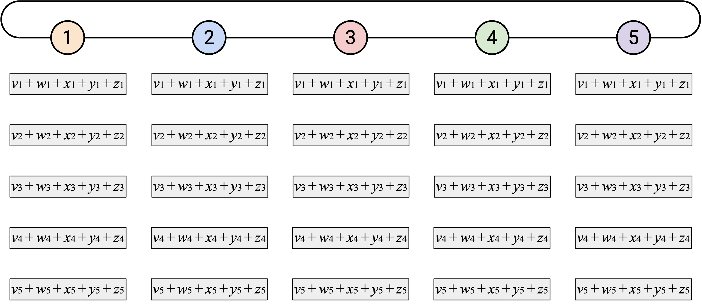
How much bandwidth does this approach use? In Step 1, each node receives a vector from its right neighbor, and sends a vector to its left neighbor. This gives us an upper-bound of \(2D\) bytes per node, for a total of \(2D \cdot p\) bytes in Step 1.
In the second step, each node again receives 1 vector and sends 1 vector. Again, we get an upper-bound of \(2D\) bytes per node, for a total of \(2D \cdot p\) bytes in Step 2.
In total, across the two steps, we sent \(4 \cdot D \cdot p = O(D \cdot p)\) bytes.
How much time does this approach take? You have to wait to receive a vector (from your left) before you can send a vector (to your right). In total, this approach takes \(p\) time steps to circle the loop in the first step, and another \(p\) time steps to send the overall sum in a loop in the second loop, for a total of \(2p = O(p)\) time steps. Each node has to send or receive up to \(2D\) bytes per time step.
As in the tree-based topology, an exact time comparison would require plugging in values for \(D\) and the resource limits in the network. Roughly speaking, compared to the first 2 approaches, this approach requires more time steps, but each time step can probably complete faster since there’s less data to transmit per time step.
Note: We chose Node 5 as the starting point, but other starting points would have also worked. Likewise, we could have also moved left-to-right in the loop, instead of right-to-left.
Approach 5: Ring-Based (Optimized)
The approaches we’ve seen so far will give us the right answer, but they create bursty workloads. In the naive ring-based approach, each node spends most of its time idling and doing nothing. At one point, you suddenly receive an entire vector, and you have to immediately add that vector to your own vector, and send the result to your left. Everyone else has to wait for you to finish this operation.
To create a less bursty, more balanced workload, we can stagger the steps of the naive ring-based AllReduce. Sending your entire vector to the left at once creates a burst of work for your left neighbor. Instead, you can send your vector to the left incrementally, by sending one element per time step.
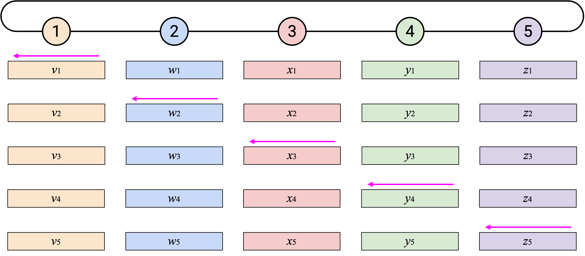
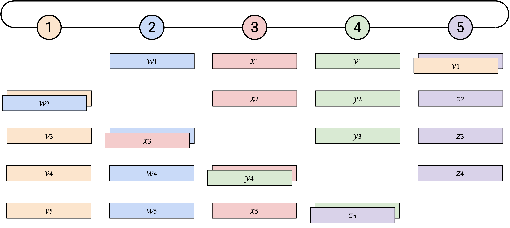
When you receive a single element (from your left), you can add that element to your own corresponding element. You can then send out that resulting sum (still a single element) to your left.
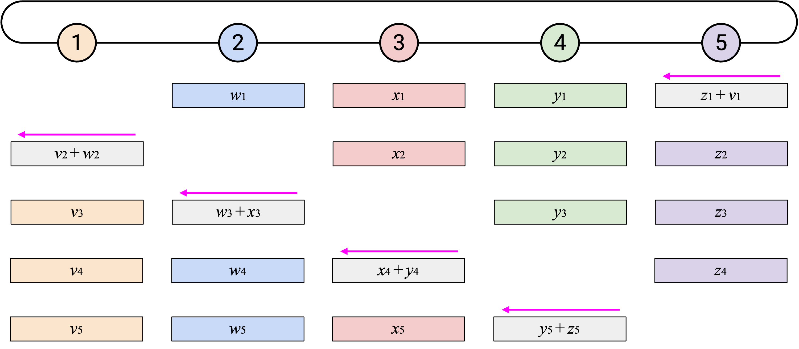
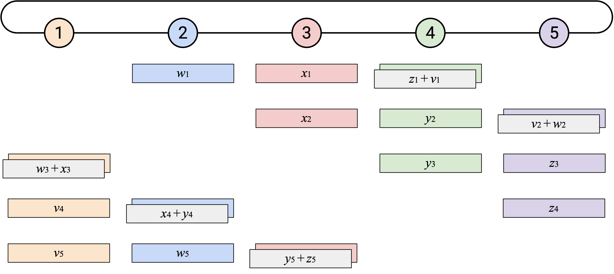
In addition to staggering the sending of each vector, notice that the starting points were also staggered. Instead of the starting point being Node 5 sending all of its elements, we now start by having the \(i\)th node send its \(i\)th element.
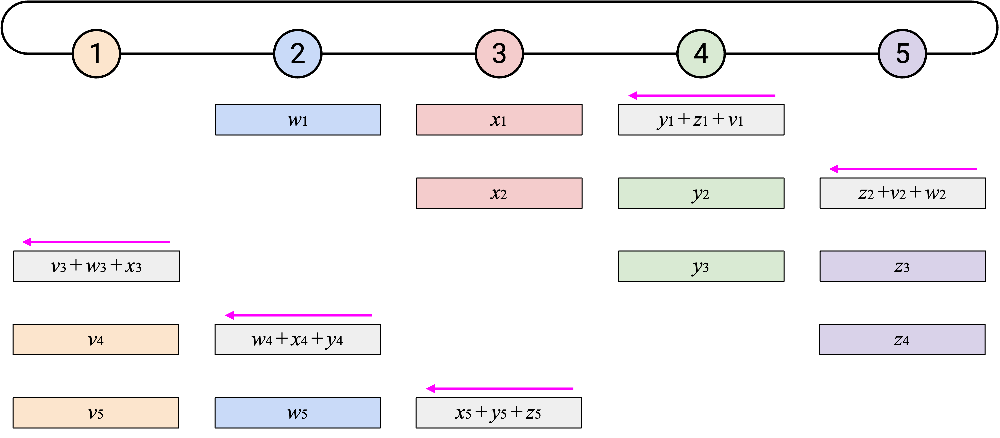
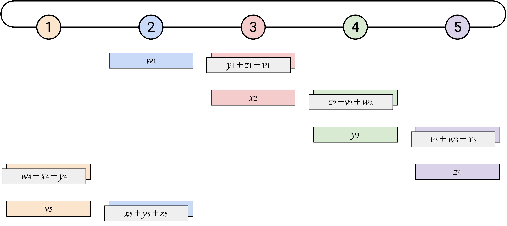
By staggering the operation along both of these dimensions (each node sends one element at a time, and each node starts at a different element), we can create a more balanced workload. At every time step, each node receives exactly one element from its right, computes one sum, and sends exactly one element to its left.
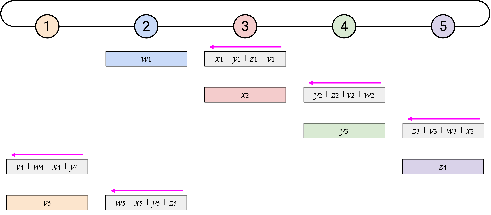
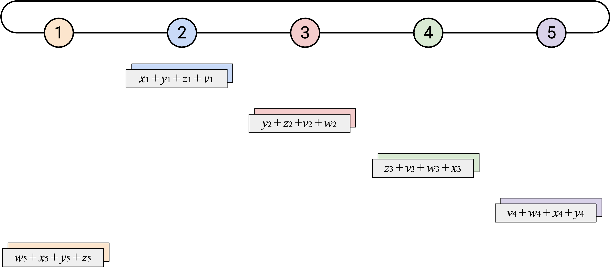
If we repeat this \(p\) times, then each element will have cycled all the way around the ring.
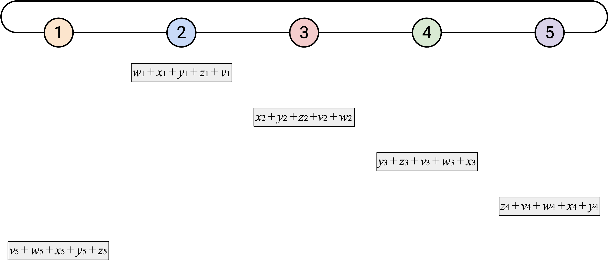
However, not everyone knows all the elements of the sum vector, so we have to cycle around the ring one more time. Just like in the naive approach, in this second cycle, when you receive an element of the overall sum, you simply send a copy to your right.
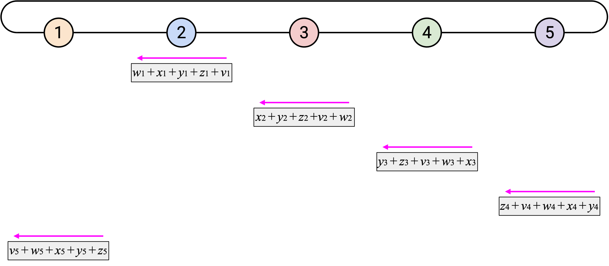
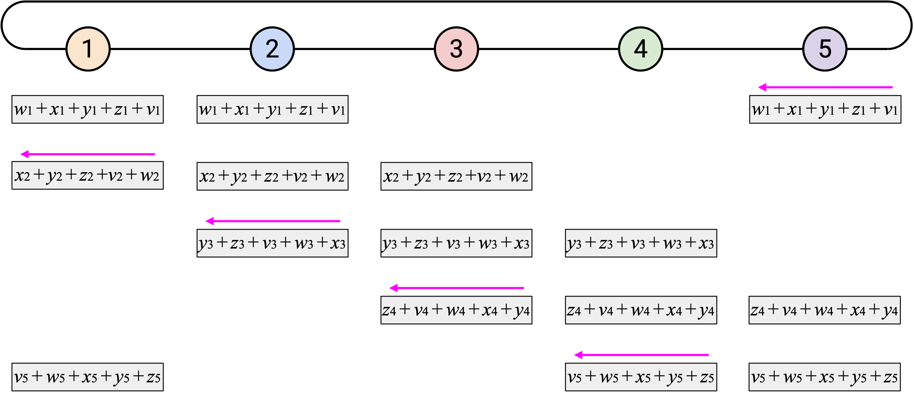
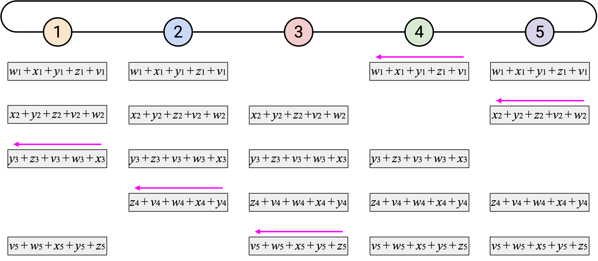
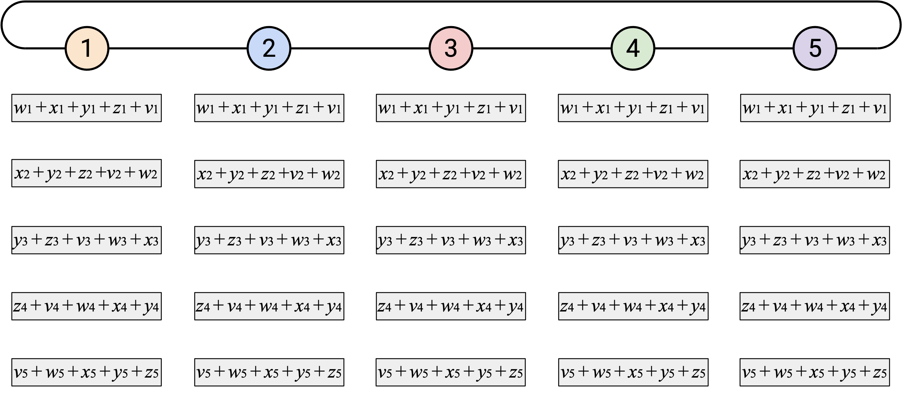
When watching this animated demo, try to focus on the two dimensions in which we are staggering the operations. If you focus on a single column, you’ll notice that we send the elements one at a time, and we receive elements one at a time.
Also, if you focus on a single row, you’ll notice that every node receives the sum of all the \(i\)th elements so far, adds its own \(i\)th element, and sends the new sum left. Since this operation cycles through all the nodes, we know that we’ll end up adding all the \(i\)th elements together.
In summary, the optimized ring-based AllReduce does exactly the same operations as the naive ring-based AllReduce. The only difference is we have staggered the sending and receiving of vectors, to reduce the burstiness of the workload at each node.
The bandwidth and time analysis of the optimized ring-based AllReduce is the same as the naive ring-based AllReduce. Each node receives/sends \(2D\) bytes in the first step, and another \(2D\) bytes in the second step, for a total of \(4 \cdot D \cdot p = O(D \cdot p)\) bytes. We still need \(O(p)\) time steps to make two cycles around the ring.
However, the bandwidth per time step is has been improved in the optimized approach. In the naive approach, each node had to receive and send an entire vector of in a single time step, for a total of \(2D\) bytes transmitted in a single time step. In the optimized approach, each node only has to receive and send a single element at each time step, for a total of \(2D/p\) bytes transmitted in a single time step
Overlay and Underlay Topologies
Recall that these collective operations are defined such that the user (i.e. AI training program) can select any set of \(p\) hosts, and ask them to run an AllReduce operation. When the user selects \(p\) hosts, it’s unlikely that they are already nicely connected in a ring topology. How can we implement the ring-based AllReduce, even if the hosts themselves aren’t physically connected in the ring topology?
The answer is to use overlays. We can draw virtual links to connect the hosts in a ring topology:
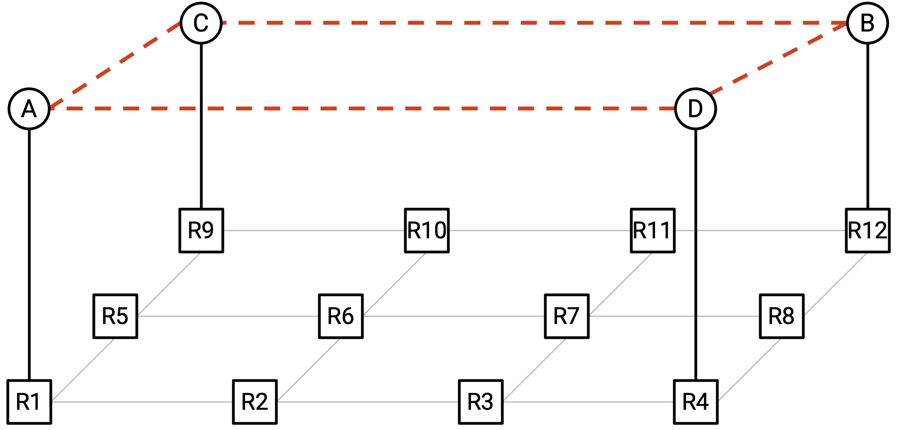
When Node D sends its vector to Node B, in the overlay perspective, Node D is sending the vector along a single (virtual) link to its direct neighbor. In the underlay perspective, this vector actually has to travel several hops before reaching its destination of Node B.
As we saw when we discussed overlay-based multicast, overlay performance depends on how well the overlay topology matches the underlay network. In the context of AI training, performance is especially important because we’re transmitting huge amounts of data.
To demonstrate why overlay topology matters, suppose that 4 nodes want to run an AllReduce operation. How do we number the nodes to achieve the best performance?
First, note that any numbering of nodes will produce the correct AllReduce result. In other words, any of the nodes could be Node 1, and any of the nodes could be Node 2, and so on. (This is not true for all collective operations, but it is true for AllReduce.)
Here are two possible numberings of the nodes:
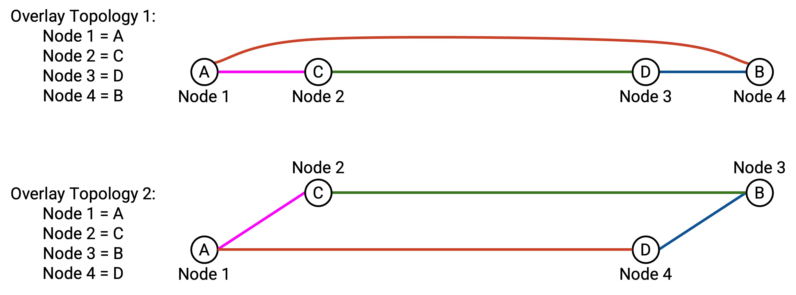
The first approach results in an average stretch of 3.5. In particular, notice that the C-to-D and B-to-A virtual links require traversing lots of links through the underlay network.
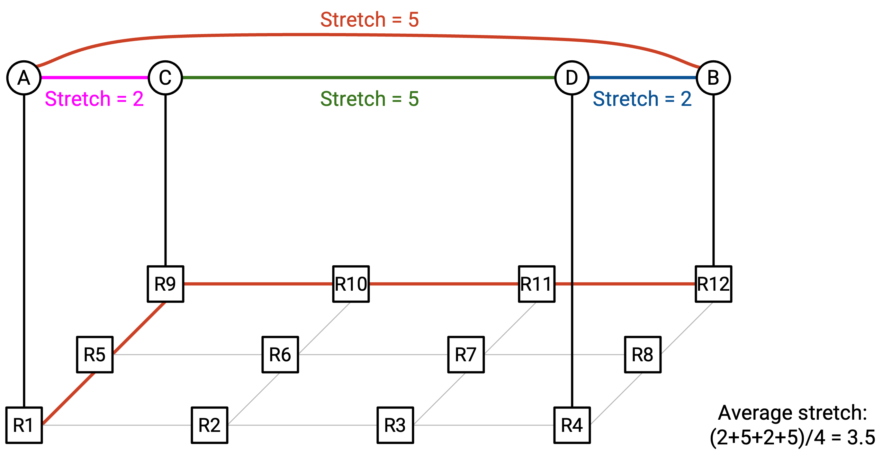
By contrast, the second approach results in an average stretch of 2.5. This set of virtual links puts neighboring links in the ring closer to each other.
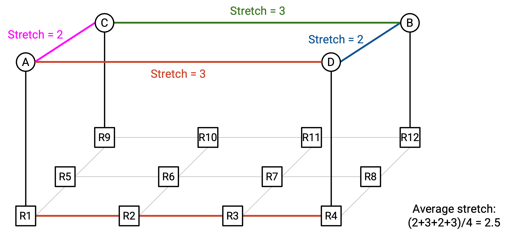
More generally, to optimize the performance of ring-based AllReduce, we would like adjacent nodes (e.g. Node \(i\) and Node \(i+1\)) to be near each other in the network.
This diagram shows an arbitrary underlay network topology, but the same idea holds for the highly-structured datacenter-like topologies we use for AI training. Recall that in these datacenter-like topologies, some nodes have very high-performance connections (e.g. two GPUs on the same machine), while other nodes have worse-performing connections (e.g. two GPUs on different racks).
AI training jobs are predictable, and the underlying topology is fixed and regular. This means that we have many opportunities to optimize the performance of our training job. For example, we can assign specific jobs to specific nodes, so that collective operations are performed on nearby nodes (e.g. all the nodes in the same rack). Finding ways to optimize AI training jobs is an active area of research.
Layers of Abstraction
In summary, you can think about collective operations at three layer of operations:
-
Definitions. At the highest layer of abstraction, we defined the operations by specifying the input and the expected output. The user only needs to understand these definitions to use the collectives. The user does not need to know how the operation is implemented.
-
Overlay. Going down one layer of abstraction, we can think about what data gets exchanged in the overlay topology. At this level, you can assume that the nodes are organized in a useful topology (e.g. tree or ring), and can send data along virtual links in that topology.
-
Underlay. At the lowest level of abstraction, we think about how the virtual links (overlay) correspond to actual physical links in the underlay. When Node 5 sends a vector to Node 4, that vector actually has to be forwarded across several physical routers and links.